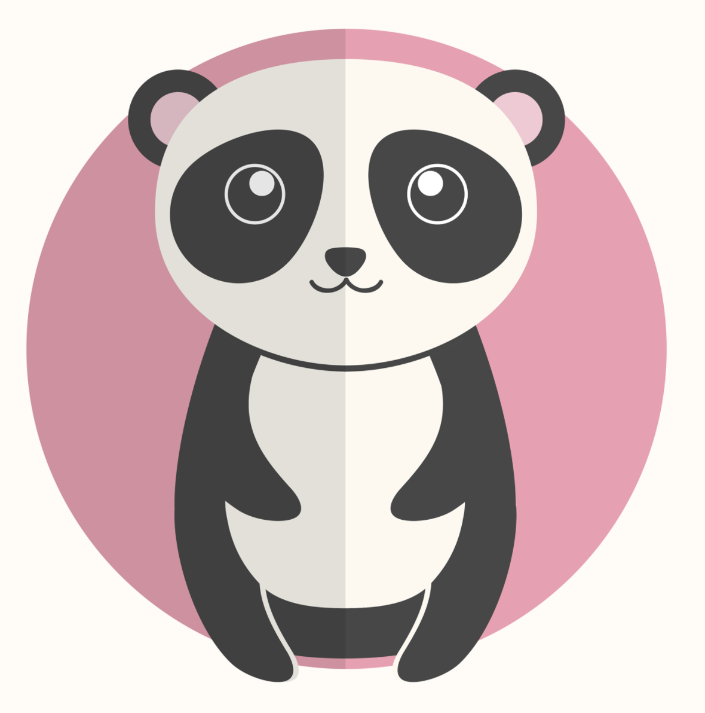

|
Instructor James FiserSenor Network DevOps Engineer，Python Trainer |
 |
About MeJames Fiser is a Network and Software DevOps Engineer. He has more than 10 years experiences in IT/Network industry, worked for Cisco Systems, Nerdalize, KPN, ING in the past 10 years. James is good at Python programming(more than 10 years experiences), Network technologies especially L3 routing protocols, distributed systems, database, etc. He also like open sourced technologies, and as a GitHub user he joined some open sourced groups and made some contribution to them. He is a scrum master and have a Cisco Service Provider CCIE certification. He is working and living in the Netherlands now. |
|
|
目前生活工作在荷兰, 是一名 DevOps 工程师。在 IT 相关领域有着超过 10 年的工作经验，先后在思科，Nerdalize，KPN，ING等公司工作过。 有超过 10 年的 Python 编程经验，是《Python3面向对象编程》第一版的中文译者之一。拥有超过 6 年的网络软件开发经验经验，主要方向为 SDN 和网络运维自动化。对于网络技术，特别是三层路由技术有着深入的研究。 欢迎关注我的 Youtube 频道和 Twitter，链接在头像下方图标按钮。 |